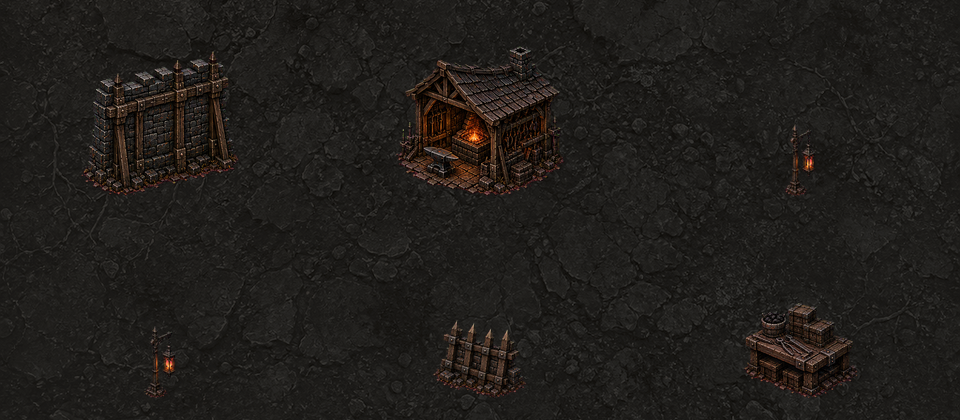
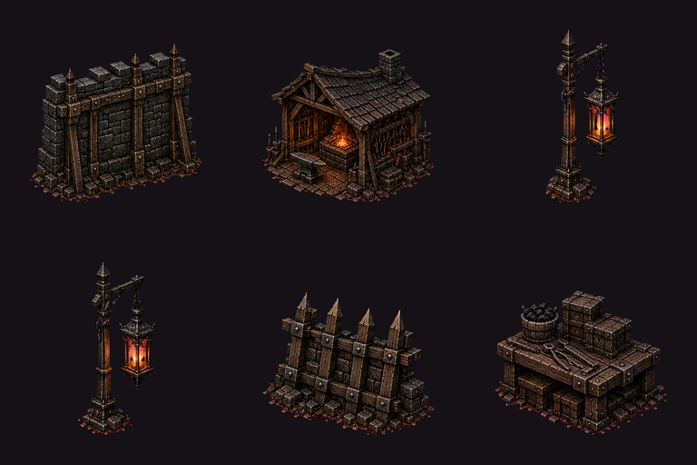
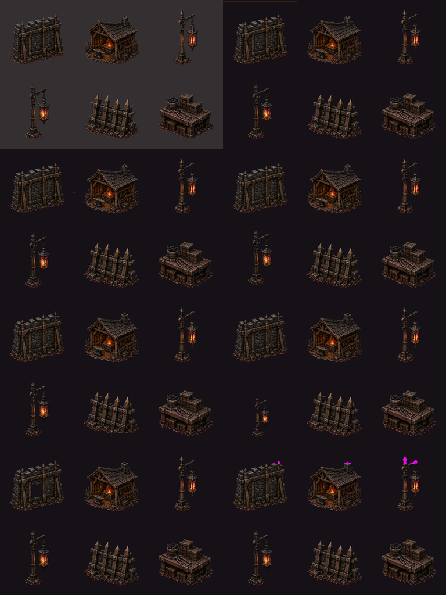

Strict raw contract: REJECT. Deterministic prepared ingress: PASS. Production promotion remains prohibited; prepared-safe cells require independent visual acceptance.
Raw
b8954bf785d6da2057744c11b1c8e47084140f9458229c4cc739fe6576f2a47e
Prepared
2af4efd5dad1a3b0472c7360b53851f6d329ac6254aa59024f3191a06da00210
Built-in artifact
exec-9d1dcb65-4171-4de3-b27d-af282ec19daa
Only declared chroma/padding failures may be remediated warnings. All other raw failures block ingress.
Preparation reproduced byte-identically twice. The same assessor checks transparent matte, spill, safe borders, common contacts, collision proxies, runtime silhouettes, the configured wall topology, and matching lantern scale.
| Cell | Prepared ink | Runtime silhouette | Runtime support width | Mechanical | Prepared integration |
|---|---|---|---|---|---|
| north-wall-solid | 382×351 | 157.81×145 | 48.33 | PASS | SAFE FOR VISUAL REVIEW |
| forge-workshop | 383×340 | 168.97×150 | 70.15 | PASS | SAFE FOR VISUAL REVIEW |
| lantern-a | 171×383 | 32.15×72 | 21.99 | PASS | SAFE FOR VISUAL REVIEW |
| lantern-b | 173×382 | 32.61×72 | 20.17 | PASS | SAFE FOR VISUAL REVIEW |
| barricade | 385×318 | 94.43×78 | 27.96 | PASS | SAFE FOR VISUAL REVIEW |
| raised-clutter-bench | 384×318 | 114.72×95 | 34.36 | PASS | SAFE FOR VISUAL REVIEW |



Keep the candidate quarantined. Mechanical prepared-ingress success may make cells eligible for independent visual acceptance, but this record does not authorize runtime or production promotion.